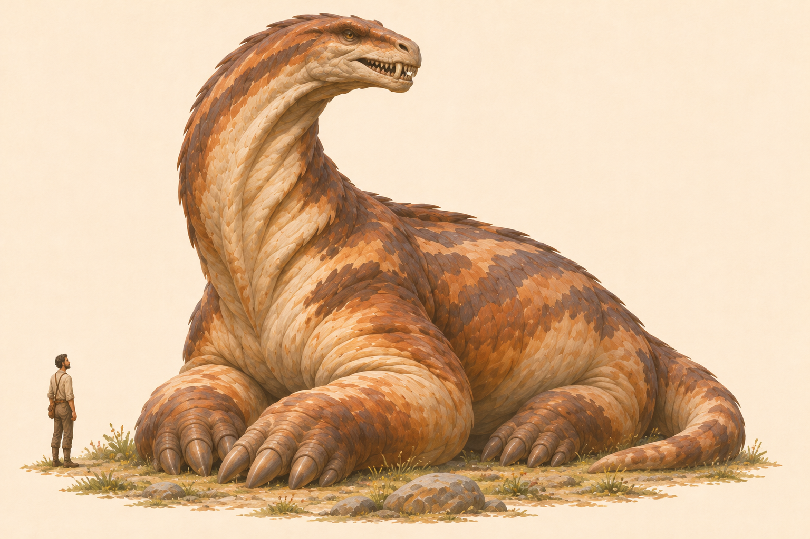
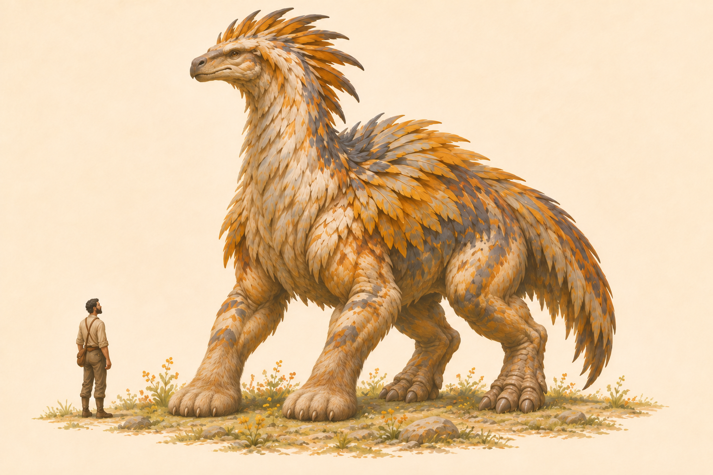
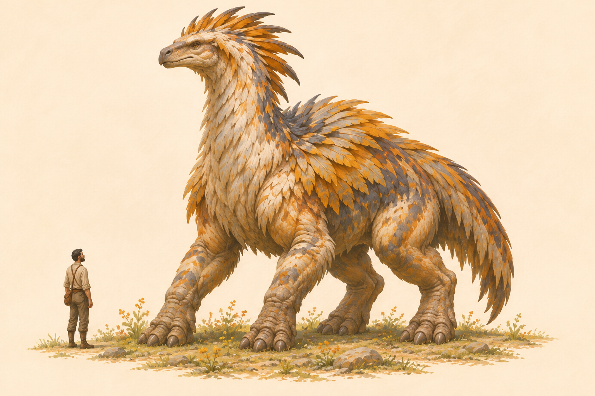

Highneck · stronger predator
Revised reference · awaiting your review

The raised neck and settled heavyweight body now carry a stronger carnivorous jaw with prominent biting teeth and a more intent gaze. This develops the predatory direction you requested while keeping the liked silhouette and mottled covering.
Compare the earlier version
Earlier M21-22, position 1 in the six-animal sheet. The revised image above follows your latest requested change.
Feathered heavyweight · bear claws
Revised reference · awaiting your review

The broad furred front paws now carry stout, visible bear-like claws with moderate projection and a gentle curve. The compact toes, sturdy legs, feathered body, closed muzzle and rear feet retain their earlier design.
Compare v4 with smaller claw tips

Compare v2 before the paw revision

Compare the earlier version
Earlier M21-23, position 2 in the six-animal sheet. The revised image above follows your latest requested change.
Mane heavyweight · wings removed
Revised reference · awaiting your review

A broad layered mane now sweeps across the neck, shoulders and upper flanks where the wings were. The long body, small mammalian face, thick tail and walking limbs remain, with no wing membranes or spars; its eventual name and ecology are open.
Compare the earlier version
Earlier M21-26, position 5 in the six-animal sheet. The revised image above follows your latest requested change.